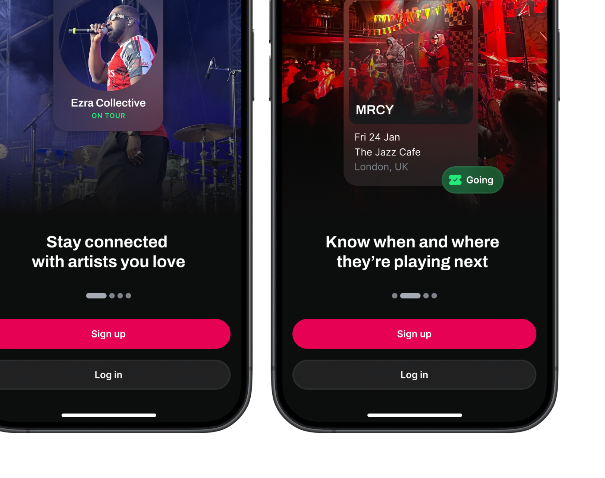
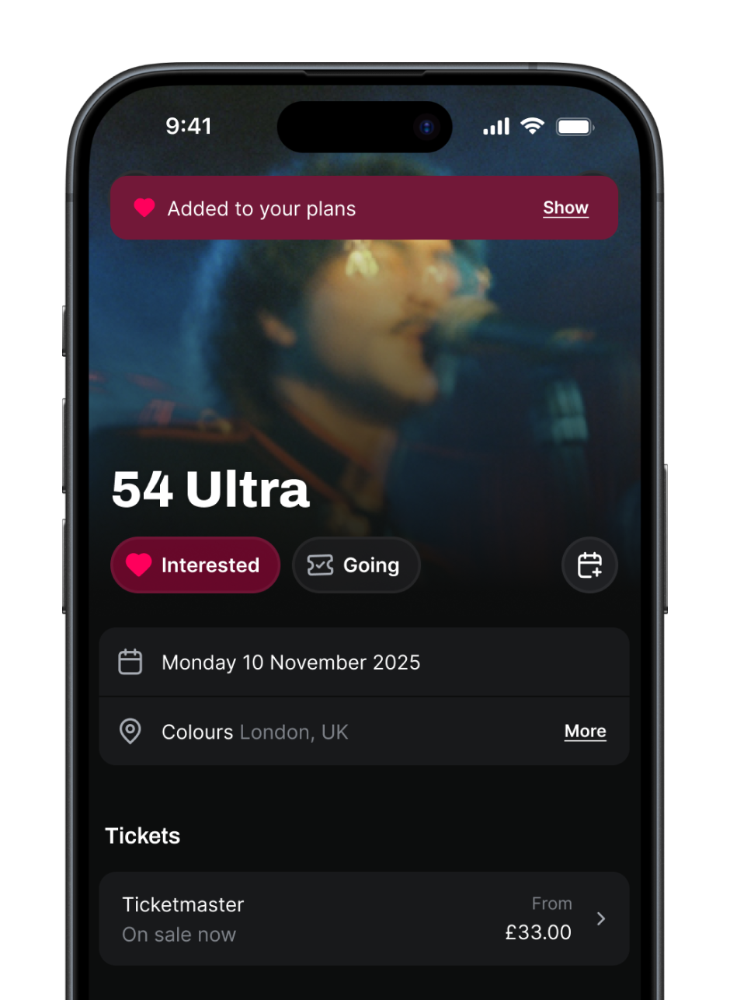
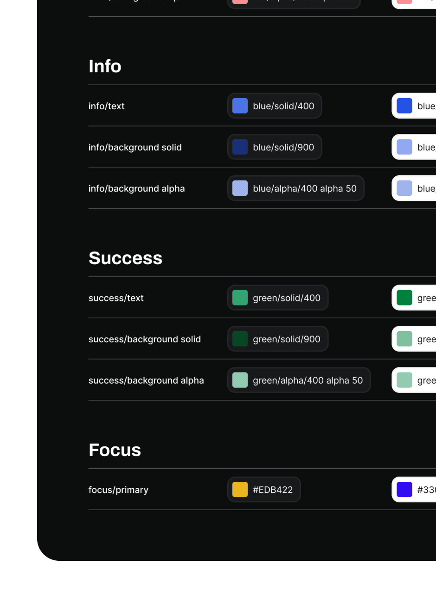
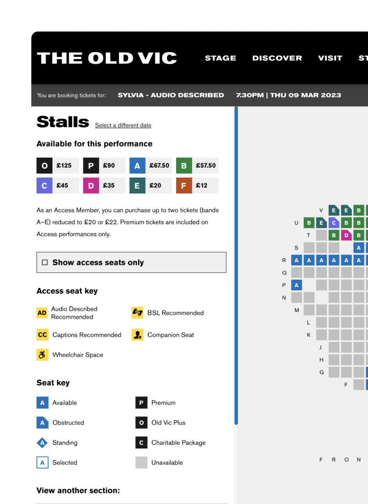

Julia • Product designer
Solving problems
and making way for growth.
San Francisco
Selected work

New Onboarding Flow
A major end-to-end redesign of the onboarding experience for a concert discovery app with 460K MAUs. By re-sequencing, shortening, and contextualising core activation steps, we doubled day 7 retention and drove a 16% uplift in high-value actions in the first session.
View case study →Attendance Optimization
Achieving a near-100% metric gain — without building new features.
View →

Roadie 2.0 Design System
Initiating a cross-functional, cross-platform design system effort.
View →Two Custom Checkout Flows
Architecting the purchase path experience for two iconic London venues.
View →

About me
I'm Julia, an SF-based product designer with 6+ years of experience across web and mobile apps. I've most recently worked at Warner Music Group.
I'm dedicated to driving strategic alignment, using data analysis to steer design decisions and guarantee they result in measurable user and business success.
I thrive on collaboration, working through ambiguity and helping move teams forward — translating core problems into crisp, compelling solutions, and using impeccable craft and storytelling to bring stakeholders and engineers on board.
When I'm not in front of a screen, I'm usually doing something crafty or enjoying live music. I love the arts in all its forms.
Let's talk
Whether you have a project in mind or just want to connect — I'd love to hear from you.
julia.s.rosner@gmail.com